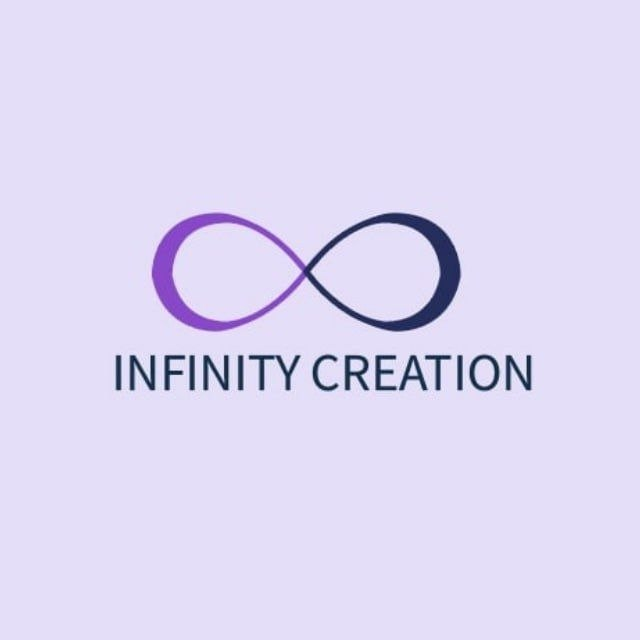

ORG
WORK EXPERIENCE
Content Creator & Executive Director
Infinity Creation Youth Team
01
ABOUT THE ROLE
Founded Infinity Creation Youth Team in 2022, focusing on content creation, knowledge sharing, and youth-oriented initiatives. Collaborated with other youth organizations to develop and deliver various programs. Built a YouTube community with 895 subscribers.
KEY RESPONSIBILITIES
- Content Creation & Scriptwriting
- Team Leadership & Management
- Program Planning & Management